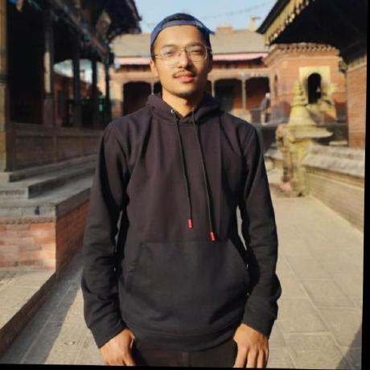

Security Operations
Microsoft Sentinel, SIEM, KQL, alert investigation, incident response, and MITRE ATT&CK.
I explore how to secure AWS and Azure environments, detect threats, investigate incidents, and use AI to make security operations faster and more effective.

I'm a cybersecurity student at Webster University with interests in cloud security engineering, security operations, identity and access management, and AI-assisted incident response.
My learning and project work focuses on Microsoft Sentinel, Microsoft Entra ID, Azure administration, AWS monitoring and security services, and automation.
I enjoy turning complex security alerts into clear, actionable investigations. My goal is to build practical, resilient security solutions that help teams detect threats earlier and respond with confidence.
Cloud platforms, security tools, and automation technologies shaping my technical learning path.
Microsoft Sentinel, SIEM, KQL, alert investigation, incident response, and MITRE ATT&CK.
Azure VMs, Entra ID, RBAC, Azure Monitor, Azure Policy, networking and administration.
IAM, EC2, S3, CloudTrail, CloudWatch, Security Hub, logging and access controls.
AI-assisted triage, Python, REST APIs, LLMs, and security workflow automation.
Least privilege, MFA, conditional access, identity governance and Zero Trust.
GitHub, Linux, PowerShell, Azure CLI, AWS CLI, VS Code and scripting.
My Microsoft Azure and AWS certification roadmap. Certification statuses will be updated as credentials are earned.
Azure identity, governance, storage, compute and networking.
Status to confirmAzure identity, platform security, and threat protection.
Status to confirmEnterprise security strategy, architecture and Zero Trust.
Status to confirmCloud operations, observability, deployment and reliability.
Status to confirmThreat detection, infrastructure protection, IAM and incident response.
Status to confirmOnce certifications are earned, update their status and add credential verification links.
Project concepts and technical areas I'm exploring. Repository links can be added as implementations are completed.
Designing a workflow to enrich Microsoft Sentinel incidents, summarize evidence, and suggest investigation steps using AI.
Exploring CloudTrail, CloudWatch, and IAM events to identify suspicious activity in AWS environments.
Exploring Microsoft Entra ID, Azure RBAC and least-privilege access configurations for secure cloud administration.
Research interest in tamper-evident threat intelligence sharing and trust models across organizations.
Graduate Studies · Cybersecurity Operations
Security operations, information security, cloud security, and risk management.
I'm interested in opportunities and collaborations involving cloud security, SOC engineering, security automation, and AI-powered incident investigation.
Replace the LinkedIn URL with your personal LinkedIn profile.